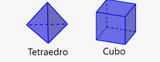
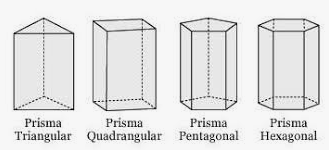
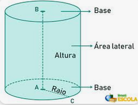

Nesta aula Levamos os poliedros de acrilico em sala de aula e uma régua para cada aluno e dividimos em grupos de 4 alunos, a atividade era medir a dimensões
e calcular a Area (quantidade de acrilico necessária para fazer-lo) e o volume (Quantidade de ar existente dentro do poliedro) de cada figura tridimensional.

no teraedro e cubo usamos somente a area do triangulo e retangulo (neste caso quadrado)

Aqui usamos as area das bases e a area retangular lateral

no cilindro calculo de area do circulo e area lateral com a comprimento da circunferência
Em ambos caculamos a área da base e multiplivamos pela altura obtemos o volume em mm² = ml